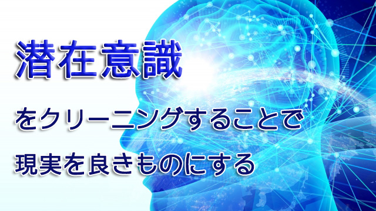

ベンジャミン・リベット博士という人がいる。この人はカリフォルニア大学の生理学教授で医者でもあったが、1980年代に人間の運動意思と脳活動について画期的実験を行った。
普通我々は行動を起こそうと決意した後に脳から身体へ運動の指示が出て、動きが起こると考える。たとえば指を動かす場合、まず①指を動かそうと意図（決意）する→②指令が脳に伝わる→③脳から筋肉へ運動せよと伝達する→④指が動く、という具合だ。
ところがリベット博士の実験はこの予測をくつがえすものだった。詳細は省くが、実は指を動かすと意図するより0.35秒前に既に大脳皮質に準備電位が発生していることが分かったのだ。つまり上の図で言うなら、①脳の準備電位が発生する（意図より0.35秒前）→②指を動かそうと意図→③指令が脳に届く→④指が動くという順番になる。
これは実に奇妙なことだ。なぜなら指を動かそうと意図するより前に脳はその動きの準備に入っているからだ。意図してから動くまでに0.2秒前後かかるから、実際に動く0.5秒ほど前にすでに脳は動く態勢に入っていることになる。
要するに脳が既に「動く」と決めてから0.35秒後に私たちは自分の意思で動かすと決めたつもりでいるということ。決める前に脳のニューロンが既に発火しているということは、無意識のうちに何らかの指令が脳に伝わっていることを意味する。
これがすべての運動（行動）にあてはまるのなら私たちに自由意思は存在しないことになる。何者かが私たちを操って行動させているのに自分の意思で動いていると思い込んでいる、操られロボットに過ぎないからだ。
リベット博士のこの実験を巡って「人間に自由意思はないのか」という議論がわき起こった。議論は脳科学にとどまらず、哲学や心理学、宗教界を巻き込んでの大論争になっている。今のところ決着はつかないが、自由意思はないという結論（科学的）には当のリベット博士自身がとまどっていたようだ。（その後実験方法を複雑化して世界中で追試が行われたが結果は同じ）
さて、ここで自由意思は存在するのかしないのかはさて置き、私が問題にしたいのは無意識（潜在意識）というものが持つ不思議な力についてだ。
先の実験でも分かる通り無意識（潜在意識）が私たちの意思や行動を規定している。私たちが日ごろ思うこと、感じること何かをやろうとする意思や行為の大半は、あらかじめ無意識の裡にパターン化された形式に則っているということ。
擬人化して言うなら、無意識が本当の主人（主体）であり私たち（の意識）は従僕なのだ。
潜在意識に委ねること
実は無意識（潜在意識）が広大な領域をもち、日ごろの人間の行動を規定していることは20世紀初めにフロイトやユング（心理学の大家）が既に明らかにしている。
現にフロイトによる「無意識の発見」はアインシュタインなどと並んで20世紀最大の発見と言われているし、フロイトの跡を継いだユングはその理論をさらに発展させ、無意識の中には個人的記憶だけでなく他者（全人類）やさらには全生物と共有する記憶があり、それだけでなく絶えず情報の交換が行われている（集合的無意識）と言う。
もしそれが本当なら「無意識」が使い方によってはあらゆる知とアクセス可能ということになりその力は莫大であるといえる。
だが今に至るも人間の「無意識」がどれほど広大でどれほどの機能を果たしているのか科学的に明らかにされていない。
人によっては潜在意識の情報処理のスピードをスーパーコンピューターに例えることもある。それに比べると通常の顕在意識の速度は手で計算するレベルと言う。
身近な例をあげるなら、車を運転中に何かが飛び出してきてブレーキを踏んだと認識したときには既にブレーキは踏まれていることが明らかになっている。
野球でいうなら投手が時速150㎞近くのボールを投げるとホームベースまで0.5秒、打者がコースを見極めてバットを振るのに0.7秒以上。つまり絶対に打てない。無意識が球を打とうとする前に身体に指示を出しているからこそヒットを打てる。
よく速球をホームランにした打者が「身体が勝手に反応してくれました」と言うが、それは正しいのだ。
この場合顕在意識で考えていては反応できない。無意識に任せたからこその成果である。では、顕在意識は必要ないのかというならそうではない。
ノーベル賞級の発見をした学者などがよく言うことだが、まず顕在意識で考え尽くした後にしばらくボーっとする期間を経て突然「答え」がひらめくことがあるという話。またヒット商品や優れたアイディアを生む経営者なども、頭でアレコレ考えたあげく、しばらく考えから離れていたら直観（インスピレーション）という形で降りてきたと話すように、顕在意識で方向づけたことをうまく潜在意識（無意識）に引き渡すことで良い結果を出すことができるのだ。
これは顕在意識をいったん活性化した後に、頭を休めることで潜在意識がセッセと働いてアイディアをもたらせてくれることを意味する。つまり①顕在意識の活性化→②顕在意識沈静化→③潜在意識活性化ということだ。
潜在意識の汚れとは
ところで、潜在意識（無意識）の働きは良いことばかりではない。ネガティブな方向に人を誘導することも多いからだ。むしろ日常生活においては困難や不幸を招くほうが多いと感じる。
どういうことだろうか。
先にも言ったように、長年積み重ねてきた考え方、観念、記憶、行動のパターンが潜在意識に貯蔵されていて私たちを規定している。いくら自由に自分の意思で考え、行動しているつもりでも「こういうときはこう考える」「こんな場合はこう感じる」そして「こうならないようにこう行動する」というおなじみのパターンに無意識に従っているからだ。
同じパターンに従っている以上進展も向上もなく、やがて行き詰まってしまうことは理解できるだろう。
そして先にも言ったように人間の潜在意識が全人類の記憶や情報とつながっているなら、その集合的無意識の中には戦争、飢餓、疫病、天変地異など生命を脅かす危険やそれらに対する恐れや不安などネガティブな記憶も積み重なっているはずだ。
つまり私たちが無自覚でいる限り、現実生活はパターン化され制限されかつネガティブな思考に染め上げられてしまうということ。言うなれば私たちの潜在意識は油断すれば常に汚染されやすい状態にあるということだ。
私たちは一日に数千もの思考や感情を浮かべていると言われている。そのほとんどは過去への後悔や未来への不安などネガティブが中心だ。
これらの思考、感情は自分が考え感じていることだと私たちは信じているが、実際は潜在意識によって考え（感じ）させられているに過ぎない。
この気づきは重大だ。
私たちは放っておくと常に何かに悩んでいる。不安や心配にさらされている。しかしそれらの悩みに実体はなく、潜在意識が発するネガティブによってそう思い込まされているだけだと分かれば現実を変えることができることになるからだ。
潜在意識を変更する法
周囲の人を見てみれば、各々いつも同じパターンで行動し同じような問題（トラブル）にぶつかっていることに気づく。会社での人間関係、子どもの問題、起こる出来事など状況は変わってもいつも同じようなことで悩んでいる。
「あの人いつも同じような問題を抱えてるなァ」と気づく。他人のことはよく見える。
しかし自分も同じだと気づくだろうか。
潜在意識に操られて自動ロボットのように常に同じ反応を返してないだろうか。こんなときは怒り、あんなときは悲しむ、こうなれば喜ぶと一喜一憂し状況に振り回されて生きていないだろうか。このように無自覚に生きていると見ている光景はどんどんグレーに染まる。
私たちはこういうとき外側に原因があると考える。怒りを感じるのは理不尽な上司のせい。イライラするのは勉強もせずゴロゴロしている息子のせい。会社がうまくいかないのは不景気のせい…など。
つまり外側の不幸（原因）→内側の不幸（結果）という考え。
しかしこの考えにある限り不幸は終わらない。なぜなら順序が逆だからだ。本当は潜在意識の中に「不幸のパターン」（種）が存在しそれが人を不幸な思考に染め、不幸な外側（現実）を呼び起こす。その現実を見て「やっぱり」と不幸な思いをますます強め、潜在意識の中に送り込んでしまい、ループする。
だから内側（潜在意識）→外側（現実）としなければならない。出発点は潜在意識のほうなのだ。
潜在意識を新しいパターンに塗り変えたなら現実も新しいものに変更されるということになる。
だが、どうやって？どうすれば私たちは潜在意識の奴隷たることから免れることができるのだろうか。潜在意識を変えて「良い現実」を見るためにどうすれば良いのか。
いくつか考えられるが、私が実際にやってみて効果的な方法は以下の2つだ。
１． 潜在意識をクリーニングする
２． 肉体感覚に敏感になる
1つめは先にも言ったように、私たちの潜在意識は個人的にも集団的（集合的）にもネガティブな情報（記憶）にさらされている。そのことを認識した上で、わき起こる感情や考えに気づく度に「これは本当に私が考えていることなのか」と疑ってみる。
次々とわき起こる思考や感情を野放しにせずその都度意識化する。いわば意識の光を当てることでそれらの感情思考を無力化するということだ。
強い感情に支配されているとき、この「意識化」は難しい。だがそれらと自分が一体化してしまうとますますその感情を強化してしまうが、いま自分が怒りなら怒りを「感じている」ことを自覚すれば、その瞬間その感情と距離を取ったことになる。怒りに囚われたまま破壊的な行動に駆られる危険性は格段に薄まる。
２の肉体（身体）感覚については、日頃から自分の五官に敏感になることによって「いま在る現実」にしっかりと足場を築くのが狙いだ。私たちは普段目の前の現実を正確に見ていない。潜在意識という曇ったサングラスを通して特定の現実を選びとっている。
同じ出来事を見ても悲観的にとらえる人もいるし楽観的にとらえる人もいる。何も感じない人もいる。同じ現実でも人によって解釈が違うのは各々の潜在意識のパターンが違うからだ。多くの人は大小問わず現実をゆがめている。
なのでできる限り現実をニュートラルに見ることが、日常生活をより良くしていくための前提条件となる。それが身体感覚（五官）をうまく使うことの意味だ。
見ている景色、風景、ビルや街、行き交う人々それらをしっかり見て美しさやあわただしさを感じながら歩く。肌に当たる日光や風、匂いを常に意識し、大地を踏みしめる足の感触を感じている。犬のフサフサした毛をなでる手の感触、食べ物の食感を感じ味わう。
身体そのものにも敏感になること。身体を感じているとき私たちの意識は「現実」に根をおろしている。潜在意識の見せる過去や未来への不安や後悔に彩られた「ゆがみ」は是正される。
これら2点を習慣にすれば、それはやがて潜在意識に染みこみパターンは変わる。
現実はより望ましいものへと変化していくだろう。
冒頭の「自由意思の問題」に戻るなら「潜在意識を良きものにしよう」という一点において自由意思はあると私は考えている。
次回はこの潜在意識を良きものにすることによって、子どもの教育や人間関係にどんな効果を及ぼすことができるかについて話していこうと思う。